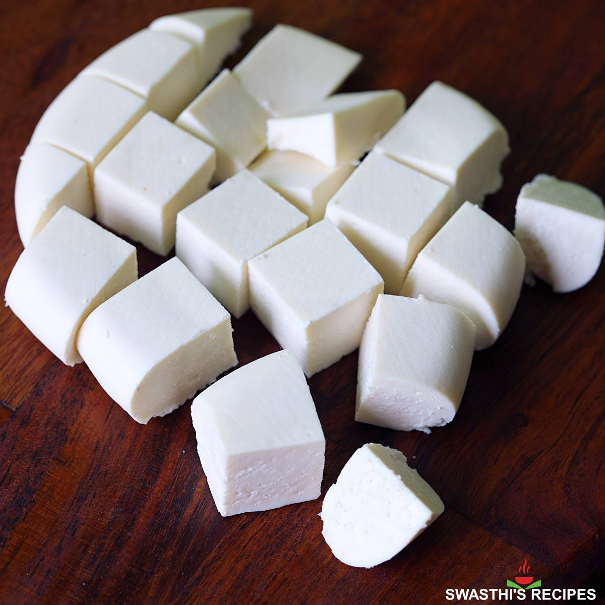

Paneer

Description
Indian Cottage Cheese, can be made into curry, can be roasted and can be eaten raw
Ingridients
- milk
- vineger or lime juice
Steps
- Boil the cream milk until lukewarm
- Mix a table spoon of vineger or lime juice
- Stir until the milk is curdled and solids are seperating from the water
- Seperate the milk solids and wash them if too sour
- Paneer is ready
back